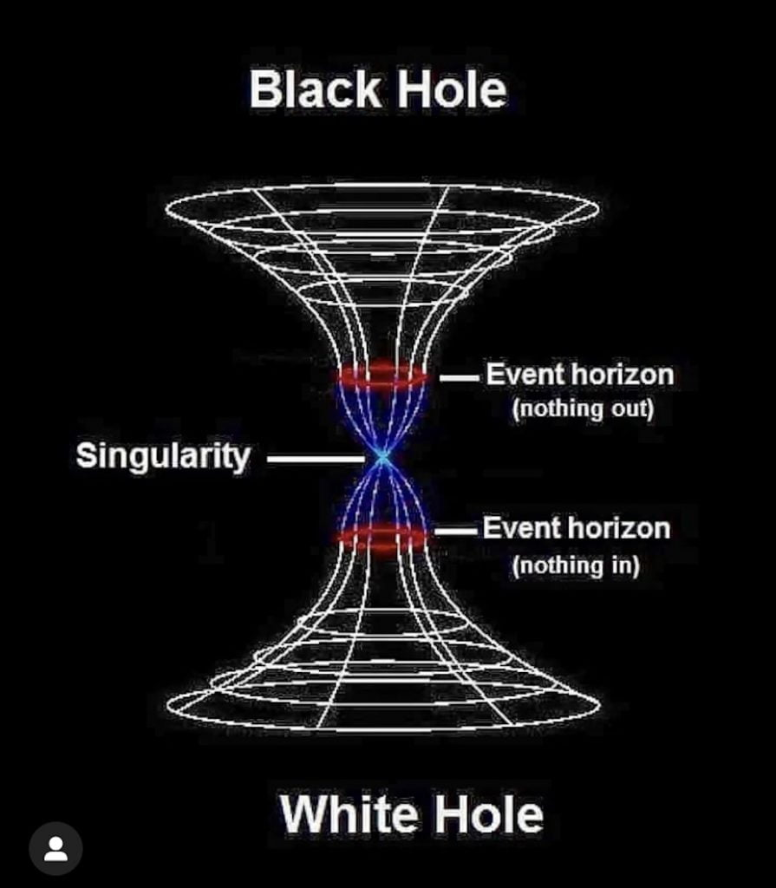

ဒီလို Black Hole တွင်းနက်ကြီးတွေ အကြောင်း လူသိကြသလောက် သူ့ရဲ့ ဆန့်ကျင်ဖက် White Hole တွင်းဖြူတွေ အကြောင်းကတော့ သိဖို့ နေနေသာသာ ကြားဖူးတဲ့ သူတောင် သိပ်ရှိကြမယ် မထင်ပါဘူး။ ဒီဆောင်းပါးမှာတော့ တွင်းဖြူတွေ ဆိုတာဘာလဲ၊ သူတို့ရဲ့ နောက်ခံ သီအိုရီက ဘာလဲ၊ ဘယ်သူတွေက တွင်းဖြူတွေ ရှိတယ်လို့ ယုံကြည်ကြသလဲ၊ တွင်းဖြူတွေနဲ့ ပါတ်သက်ပြီး ဘာအထောက်အထားတွေ ရှိသလဲ ဆိုတာတွေကို တင်ပြ ဆွေးနွေးသွားမှာ ဖြစ်ပါတယ်။
အာကာသ တွင်းဖြူတွေဆိုတာ Black Hole တွင်းနက်တွေလိုပဲ အိုင်းစတိုင်းရဲ့ အထွေထွေ နှိုင်းယှဉ်ခြင်း နိယာမ (General Theory of Relativity) ကနေ ပေါက်ပွားလာတာ ဖြစ်ပါတယ်။ တွင်းနက်တွေလိုပဲ ကြယ်တွေ ပြိုပျက်ပြီး တွင်းဖြူတွေ ဖြစ်လာတယ်လို့ ယူဆခဲ့ ကြတာပါ။ ဒါပေမယ့် အခုနောက်ပိုင်းမှာတော့ တွင်းဖြူတွေဟာ သီးသန့် ဖြစ်တည်နေတာ မဟုတ်ပဲ တွင်းနက်တွေရဲ့ အခြားတဖက်ခြမ်း ဖြစ်တယ် ဆိုတဲ့ အယူအဆလဲ ပေါ်ပေါက်လို့ လာပါတယ်။
ဒီတွင်းဖြူတွေကို အပြင်ဖက်က ကြည့်မယ် ဆိုရင်တော့ သူတို့ရဲ့ ပုံပန်းသဏ္ဍာန်က တွင်းနက်တွေနဲ့ အတူတူပဲ တွေ့ကြရမှာပါ။ သူ့မှာ တွင်းနက်လိုပဲ ဒြပ်ထု (Mass) ရှိမယ်။ တွင်းနက်တွေလိုပဲ ဝင်ရိုးမှာ လည်နေကောင်း လည်နေနိုင်ပါတယ်။ တွင်းနက်တွေလိုပဲ accretion disk လို့ခေါ်တဲ့ ဓါတ်ငွေ့တွေနဲ့ ဖုန်မှုန့်တွေ ဝဲဂယက် ထနေတဲ့ ဝဲကြီး သူ့ပါတ်လည်မှာ ရှိနေမယ်။ ပြီးတော့ တွင်းနက်မှာ event horizon ခေါ်တဲ့ ပြန်လမ်းမရှိတော့တဲ့ နယ်ခြားမျဉ်း ရှိသလို သူ့မှာလဲ နယ်ခြားမျဉ်း တစ်ခုရှိနေမယ်။ ရုတ်တရက် ကြည့်ရင်တော့ တွင်းဖြူတွေဟာ တွင်းမည်းတွေနဲ့ ခွဲမရအောင် တူနေပါလိမ့်မယ်။
ဒါပေမယ့် အချိန်ကာလ တခုကြာအောင် စိတ်ရှည်ရှည်နဲ့ စောင့်ကြည့်ခဲ့မယ်ဆိုရင် တွင်းနက်နဲ့ မတူတာကို တွေ့လာရမှာ ဖြစ်ပါတယ်။ အဲ့တာကတော့ တွင်းနက်ထဲက အရာဝတ္ထု တခုခု အန်ထွက်လာတဲ့ အချိန်ပါပဲ။ ဒီလို အန်ထွက်လာတာ တွေ့လိုက်မှပဲ ဒါဟာ တွင်းနက်တခု မဟုတ်ပဲ တွင်းဖြူတခု ဖြစ်နေပါလား ဆိုတာကို သဘောပေါက်မိမှာ ဖြစ်ပါတယ်။
သိပ္ပံ ပညာရှင်တွေက တွင်းဖြူတွေကို အချိန်ပြောင်းပြန် သွားနေတဲ့ တွင်းနက်တွေလို့ တင်စား ပြောလေ့ ရှိကြပါတယ်။ ဘာနဲ့ တူလဲ ဆိုတာ့ တွင်းနက်တွေကို ဗီဒီယို ရိုက်ထားပြီး နောက်ပြန် ပြန်ရစ် ကြည့်ရင် မြင်ရ သလိုမျိုးပေါ့ဗျာ။ ရုပ်ရှင်တွေကို ပြောင်းပြန် ပြန်ရစ်ကြည့်ရင် လူတွေ နောက်ပြန် သွားနေသလို၊ ကွဲသွားတဲ့ အရာတွေ ပြန်ဆက် သွားသလို၊ မိုးပေါ်က ကျလာတဲ့ မိုးစက်တွေ ပြန်တက်သွားသလိုပေါ့။
တွင်းနက်တွေမှာ Event Horizon လို့ခေါ်တဲ့ ပြန်လမ်းမဲ့ နယ်ခြားမျဉ်း ရှိပါတယ်။ ဒီမျဉ်းကို ကျော်မိရင် လူနဲ့ ယာဉ်တွေ ၊ ဓါတ်ငွေ့တွေ၊ ဖုန်မှုန့်တွေ မပြောနဲ့ ကြယ်တွေတောင် ပြန်ထွက်လို့ မလွတ်နိုင်တော့ပါဘူး။ နောက်ဆုံး ကုန်ကုန်ပြောရင် အလင်းရောင်တောင်မှ ပြန်မထွက်နိုင် တော့ပါဘူး။ ဘာဆိုဘာမှကို ပြန်လမ်းမရှိတော့တာပါ။
တွင်းဖြူကြီးတွေမှာလဲ ဒီ Event Horizon ဆန်ဆန် နယ်ခြားမျဉ်း ရှိပါတယ်။ ဒါပေမယ့် တွင်းဖြူတွေက နယ်ခြားမျဉ်းက ဘယ် အရာဝတ္ထုမှ မရောက်နိုင်တဲ့ နယ်ခြားမျဉ်း ဖြစ်ပါတယ်။ ဘယ် အာကာသ ယာဉ်မှ ဒီမျဉ်းကို ရောက်အောင် မသွားနိုင်သလို အလင်းရောင်ကလဲ ဒီနယ်ခြားမျဉ်းဆီကို မရောက်နိုင်ပါဘူး။
တွင်းဖြူတွေရဲ့ အတွင်းထဲက အရာဝတ္ထုတွေကတော့ ဒီနယ်ခြားမျဉ်းကို ဖြတ်ကျော်ပြီး အပြင်ကို ထွက်လာနိုင် ကြပါတယ်။ ဒါပေမယ့် ဘယ်အရာကမှ ဒီနယ်ခြားမျဉ်းကို ဖြတ်ပြီး အတွင်းကို ဝင်မသွားနိုင်တဲ့ အတွက် တွင်းဖြူကြီးတခုရဲ့ အတွင်းပိုင်းဟာ ကျန် ပြင်ပ စကြာဝဠာကြီး တစ်ခုလုံးနဲ့ လုံးဝကို အဆက်ပြတ်နေတဲ့ နေရာတခု ဖြစ်နေပါလိမ့်မယ်။
တွင်းဖြူ တွင်းမဲ အမွှာညီနောင်
အိုင်းစတိုင်းက သူ့ရဲ့ နှိုင်းယှဉ်ခြင်း နိယာမကို ၁၉၁၅ ခုနှစ်မှာ တင်ပြခဲ့တော့ ရူပဗေဒ လောက တခုလုံးဟာ ဆူနာမီ လှိုင်းကြီး ရိုက်ခတ်ခံရသလို ဖရိုဖရဲ ဖြစ်သွားပါတယ်။ အစဉ်အလာ လက်ခံယုံကြည်ခဲ့တဲ့ ရူပဗေဒ နိယာမတွေအားလုံး အကုန် ဖရိုဖရဲ ဖြစ်ကုန်တာပါ။ ဒီအကျိုးဆက်က အခုထိအောင် ရိုက်ခတ်နေတုန်းပဲ ဖြစ်ပါတယ်။အိုင်းစတိုင်းရဲ့ သီအိုရီက ဆွဲငင်အား ဆိုတာကြီးကို စပြီး ပြောင်းပြန်လှန်ပစ် လိုက်တာပါ။ ယခင် နယူတန် လက်ထက်ကစလို့ လက်ခံယုံကြည်ထားတာက ဆွဲငင်အားဆိုတာ ဒြပ်ရှိတဲ့ အရာဝတ္ထု နှစ်ခုကြားက တစ်ခုနဲ့ တစ်ခု အပြန်အလှန် ဆွဲတဲ့ အင်အားတစ်ခု ဖြစ်ပါတယ်။ အိုင်းစတိုင်းကတော့ ဆွဲငင်အားဆိုတာ ဒြပ်ထုကြောင့် အာကာသနဲ့ အချိန်တွေ ကွေးကောက်ကုန်တာလို့ ပြင်ပြောပါတယ် (bending of space-time) ။ ဒီကစပြီး အကုန် ရှုပ်ကုန်တော့တာပါပဲ။
အိုင်းစတိုင်းက ဒီလို ဆွဲငင်အားဆိုတာကို အဓိပ္ပါယ် အသစ် ဖွင့်လိုက်တော့ ရူပဗေဒ ပညာရှင်တွေ အလုပ်ရှုပ်ကုန် ကြပါတော့တယ်။ ဒီပညာရှင်တွေက အိုင်းစတိုင်းပြောသလို ဒြပ်ထုကြောင့် အာကာသနဲ့ အချိန် ဆိုတာတွေ ကွေးကောက်ကုန်တယ် ဆိုတော့ ဘယ်လောက်ထိ ကွေးကောက်ကုန်လဲ ဆိုတာကို တွက်ချက်ကြည့်ဖို့ ကြိုးစားကြပါတယ်။
အိုင်းစတိုင်းရဲ့ နှိုင်းယှဉ်ခြင်း နိယာမ ထွက်လာပြီး တစ်နှစ်လောက် အတွင်းမှာ ဂျာမန် ရူပဗေဒ ပညာရှင် ကားလ် ရွှားလ်ချိုင်း (Karl Schwarzschild) ရဲ့စာတမ်းတစောင် ထွက်လာပါတယ်။ ဒီစာတမ်းမှာ သူက အိုင်းစတိုင်းရဲ့ နိယာမကို သုံးပြီး ဒြပ်ထုတစ်ခုရဲ့ ပတ်ခြာလည်မှာ ရှိနေတဲ့ အာကာသနဲ့ အချိန် ဘယ်အထိ ကွေးသွားမလဲ ဆိုတာကို သင်္ချာနည်းနဲ့ တွက်ပြခဲ့ပါတယ်။ သူ့ရဲ့ ဒီစာတမ်းဟာ မထင်မှတ်ပဲ တွင်းနက်ကြီးတွေ ဆိုတဲ့ အယူအဆကို မွေးဖွားပေးခဲ့ပါတယ်။
ရွှားလ်ချိုင်းက သူ့ရဲ့ စာတမ်းမှာ စက်လုံးပုံ ဒြပ်ထုတစ်ခုဟာ အရမ်းသေးတဲ့ အမှုန်လေး အထိ ကျုံ့သွားခဲ့မယ် ဆိုရင် ဘာဖြစ်လာမလဲ ဆိုတာကို တွက်ချက်ပြခဲ့ပါတယ်။ ဒီ စက်လုံးပုံ ဒြပ်ထုဟာ တဖြည်းဖြည်း ကျုံ့ဝင်သွားတဲ့အခါ နောက်ဆုံး အမှတ်ကလေး သေးသေးလေး တစ်ခု အရွယ်အထိ ကျုံ့ဝင်သွားခဲ့မယ်ဆို သူ့ရဲ့ သိပ်သည်းဆကလဲ တိုင်းတာလို့ မရတော့လောက်အောင် အရမ်း ကြီးသွားမှာ ဖြစ်ပါတယ်။ ဒါကို ကျွန်တော်တို့က “သိပ်သည်းဆ အနန္တ” လို့ ရေးကြလေ့ ရှိပါတယ်။
ဒီလို အစက်ကလေးဖြစ်သွားပေမယ့်လဲ သူ့ရဲ့ ဒြပ်ထုကတော့ မူလက ရှိနေခဲ့တဲ့ စက်လုံးကြီးရဲ့ ဒြပ်ထုအတိုင်း မပြောင်းလဲပါဘူး။ ဒီအခါ ဒီအမှတ်ကလေးရဲ့ ဒြပ်ထုဟာ အာကာသထဲ သူနေရာယူထားတဲ့ နေရာတဲ့ ယှဉ်လိုက်ရင် မတန်တဆ ကြီးနေပါတယ်။ အဲ့လို မတန်တဆ ကြီးနေတော့ ဘာဖြစ်လာလဲ ဆိုရင် သူ့အနားမှာ ရှိတဲ့ အာကာသနဲ့ အချိန် (Space-Time) ကို ဆွဲပြီး ဆုတ်ဖြဲပစ်လိုက်တာပါပဲ။ ဒီ ဆုတ်ပြဲသွားတဲ့ အာကာသနဲ့ အချိန် အပိုင်းအစလေးနဲ့ သူ့ကိုယ်သူ အထပ်ထပ် ရစ်ပတ် လိုက်ပါတယ်။ ဘာနဲ့ တူလဲ ဆိုတော့ သန်းဥကို သတင်းစာ စက္ကူနဲ့ ထုပ်ဖို့ ကြိုးစား သလိုပေါ့။ မျက်စေ့ထဲမှာ သန်းဥ တစ်ဥကို သတင်းစာ စက္ကူပေါ် တင်ပြီး သူ့နားက သတင်းစာ စက္ကူနေရာလေးကို ဖြဲပြီး အထပ်ထပ် ထုပ်ကြည့်လိုက်ပေါ့။ အဲ့သည် သဘောပါပဲ။
ဒီလို အလွန် သိပ်သည်းဆ အနန္တ ဖြစ်သွားတဲ့အထိ ကြုံ့ဝင်သွားတဲ့ အမှတ်ကလေးကို Singularity လို့ ခေါ်ပါတယ်။ မြန်မာလိုတော့ “အမှတ်ထူး” လို့ ပြန်ကြပါတယ်။ အဲ့သည် Singularity အမှတ်ထူး ဟာ ခုန ပြောသလိုမျိုး သူ့အနားမှာ ရှိနေတဲ့ အာကာသနဲ့ အချိန်ကို ဆွဲယူပြီး သူ့အနားမှာ အထပ်ထပ် ရစ်ပတ်လိုက်တဲ့ အတွက် အဲ့သည် အာကာသနဲ့ အချိန် နေရာကွက်ကွက်လေးဟာ အာကာသ စကြာဝဠာကြီး ထဲကနေ သီးသန့် ပြတ်ထွက်သွားပါတယ်။ အပေါ်မှာ သန်းဥကို သတင်းစာ စက္ကူပိုင်းလေး ဆုတ်ပြီး ထုပ်လိုက်သလိုပေါ့။ ပြောရရင် ဒီ Singularity အမှတ်ထူးဟာ စကြာဝဠာကြီး တခုလုံးနဲ့ သီးခြားကင်းကွာပြီး ရှိနေတာ ဖြစ်ပါတယ်။
Black Hole တွေဟာ တကယ်တော့ Singularity အမှတ်ထူးတွေ ဖြစ်ကြပါတယ်။ ကျွန်တော်တို့ Big Bang ကြီးမှသာ Singularity မဟုတ်ပါဘူး။ အိုင်းစတိုင်းရဲ့ သီအိုရီ အရရော၊ ရွှားလ်ချိုင်းရဲ့ တွက်ချက်မှု အရရောဆိုရင် ဒီ တွင်းနက်တွေဟာ သိပ်သည်းဆ ပြင်းထန်လွန်းတော့ သူတို့နားက အာကာသနဲ့ အချိန် (Space-time) ကို ဆွဲယူပြီး သူတို့ပတ်ခြာလည်မှာ အထပ်ထပ် ရစ်ပတ်လိုက်ပါတယ်။ ကောင်ညှင်းထုပ်လိုပေါ့ဗျာ။ ဘယ်လောက်တောင် ထုပ်ထားလဲဆို ထွက်ပေါက်မရှိအောင်ကို ထုပ်ထားလိုက်တာပါ။
အပေါ်က ပြောခဲ့သလို ဒီ Singularity အမှတ်ထူး နေရာပတ်လည်က အာကာသနဲ့ အချိန်ဟာ ပြင်ပက စကြာဝဠာနဲ့ သီးခြားကင်းကွာ နေတယ် ဆိုပေမယ့် လုံးလုံးကြီး ကင်းကွာနေတာမျိုးတော့ မဟုတ်ပါဘူး။ တွင်းနက်ရဲ့ ပြန်လမ်းမဲ့ နယ်ခြား (Event Horizon) အပြင်ဖက်က အဖြစ်အပျက်တွေက တွင်းနက်အတွင်းက အဖြစ်အပျက်တွေကိ သက်ရောက်မှု ရှိနိုင်ပါသေးတယ်။ အတွင်းက အဖြစ်အပျက် တွေကတော့ အပြင်က စကြာဝဠာကြီး အပေါ်မှာ ဘာသက်ရောက်မှုမှ မရှိနိုင်တော့ပါဘူး။ ဒါကို ရှင်းရှင်း ပြောရရင် အပြင်ကနေ အထဲ ဝင်လို့ရသေးတယ်၊ ဝင်ပြီးရင် ပြန်ထွက်မရတော့ဘူး၊ ပြန်လမ်းမဲ့သွားပြီ လို့ ဆိုလိုတာပါ။
၁၉၆၀ ခုနှစ်မှာ မာတင် ဒေးဗစ် ကရပ်စကောလ် (Martin David Kruskal) ရဲ့ နာမည်ကျော် သုတေသန စာတမ်း ထွက်လာပါတယ်။ ဒီစာတမ်းမှာ ရွှားလ်ချိုင်း ရဲ့ တွက်ချက်မှုကို ပိုမိုချဲ့ထွင်ပြီး တွက်ချက်မှုတွေ ပြုလုပ်ခဲ့ပါတယ်။ ဒီစာတမ်းမှာ သူတင်ပြခဲ့တဲ့ အချက်ကတော့ တွင်းနက်တွေဟာ အခြားတွင်းနက်တွေနဲ့ Singularity အမှတ်ထူး နေရာကနေ ဆက်စပ်နေတယ် ဆိုတာပဲ ဖြစ်ပါတယ်။ တနည်းအားဖြင့် တွင်းနက်တွေတိုင်းမှာ သူနဲ့ စုံတွဲ တွင်းနက်တွေ ရှိနေတယ် ဆိုတာပဲ ဖြစ်ပါတယ်။ ဒီကနေမှ White Hole တွင်းဖြူဆိုတဲ့ အယူအဆ ရူပဗေဒ ပညာရှင်တွေ အကြားမှာ ပေါ်ပေါက်လာခြင်း ဖြစ်ပါတယ်။
White Hole အယူအဆ နှစ်ခု
ဒီနေရာမှာ တွင်းဖြူနဲ့ ပါတ်သက်တဲ့ အယူအဆ နှစ်ခုကို အရင် တင်ပြလိုပါတယ်။ ပထမ အယူအဆ ကတော့ တွင်းဖြူတွေဟာ တွင်းနက်တွေနဲ့ ဆက်နေတဲ့ အခြားတဖက်ခြမ်း ဖြစ်တယ်ဆိုတဲ့ အယူအဆ ဖြစ်ပါတယ်။ ဒီ အယူအဆမှာတော့ တွင်းနက်ထဲ ဝင်သွားတဲ့ အရာဝတ္ထုတွေဟာ wormhole လို့ခေါ်တဲ့ အချိန်နဲ့ အာကာသ ထဲမှာ ဖြစ်နေတဲ့ လှိုင်ခေါင်းကနေ ဖြတ်ပြီး စကြာဝဠာရဲ့ အခြား တနေရာ (သို့) အခြားအချိန် တခုခု ကနေ ပြန်ထွက်လာမယ် ဆိုတဲ့ အယူအဆ ဖြစ်ပါတယ်။ တနည်းအားဖြင့် တွင်းဖြူတွေဟာ wormhole ရဲ့ တဖက်က ထွက်ပေါက်ဖြစ်တယ် ဆိုတဲ့ အယူအဆ ဖြစ်ပါတယ်။ ဒီအယူအဆက အိုင်းစတိုင်းရဲ့ နှိုင်းယှဉ်မှု နိယာမ နဲ့လဲ ကိုက်ညီနေပါတယ်။
ဘာ့ကြောင့် တွင်းဖြူတွေ မရှိနိုင်တာလဲ
ဒီနေရာမှာ ဘာ့ကြောင့် တွင်းဖြူတွေ မရှိနိုင်ဘူးလဲ ဆိုတဲ့ အမြင်ကို တချက် တင်ပြ ဆွေးနွေးလိုပါတယ်။ အိုင်းစတိုင်းရဲ့ နှိုင်းယှဉ်မှု နိယာမ အရ တွင်းဖြူတွေ ရှိမယ်လို့ ဟောကိန်းထုတ်ထားပေမယ့် လက်တွေ့မှာ ဘယ်သူမှ တွင်းဖြူတွေ ဘယ်လို ဖြစ်လာလဲ စဉ်းစားလို့ မရကြပါဘူး။ ပထမ အယူအဆမှာ ပြောသလိုမျိုး တွင်းဖြူတွေဟာ တွင်းနက်တွေရဲ့ ထွက်ပေါက်ဆိုရအောင်က တွင်းနက်ထဲ ဝင်သွားတဲ့ အရာမှန်သမျှဟာ singularity မှာ အဆုံးသတ်သွားတာပါ။ ဒီတော့ ဟိုဖက်ကနေ ပြန်ထွက်လာဖို့ ဆိုတာ ဘယ်လိုမှ မဖြစ်နိုင်ပါဘူး။နောက်အယူအဆ ဖြစ်တဲ့ တွင်းဖြူတွေဟာ တွင်းနက်တွေ Singularity ကို မရောက်ပဲ ဆွဲအားပြန်လျော့သွားပြီး မူလကြယ်က ဒြပ်ထုတွေကို ပြန်အန်ထုတ်ပြီး ဖြစ်လာဖို့ ဆိုရင်လဲ ဒီအဖြစ်အပျက် ဖြစ်ဖို့ နှစ် ဘီလီယံ ရာပေါင်း မြောက်များစွာ ကြာမှာ ဖြစ်ပါတယ်။ ဒီလို တကယ်ဖြစ်လာခဲ့မယ် ဆိုရင်တောင် မူလအခြေအနေ ပြန်ရောက်ဖို့ ဆိုတာက လက်ရှိ လက်ခံထားတဲ့ ရူပဗေဒ သဘောတရားတွေနဲ့ ဆန့်ကျင်နေပါတယ်။ (Second Law of Thermodynamic အပူလှုပ်ရှားမှု နိယာမ အရ စကြာဝဠာထဲက “ဖရိုဖယဲ ဖြစ်မှု” တွေဟာ တိုးပွားလို့ပဲ လာနေမယ်လို့ ဆိုထားပါတယ်။ ဒါ့ကြောင့် တွင်းနက်ထဲ ဖရိုဖရဲ ဖြစ်နေတဲ့ ကြယ်ရဲ့ ဒြပ်ထုတွေဟာ မူလက ရှိခဲ့တဲ့ အစီအစဉ် တကျ ပုံစံကို ပြန်မရောက်နိုင်ပါဘူး။)
နောက်တခုကလဲ အကယ်လို့ တွင်းဖြူတွေ ဖြစ်ပေါ်လာ ခဲ့မယ် ဆိုရင်တောင် သူတို့ဟာ သိပ်ကြာကြာ တည်မြဲနေနိုင်မှာ မဟုတ်ပါဘူး။ အပြင်ကို မှုတ်ထုတ်လိုက်တဲ့ အရာမှန်သမျှဟာ ပတ်လမ်းထဲက အရာဝတ္ထုတွေနဲ့ တိုက်မိကုန်မှာ ဖြစ်ပါတယ်။ ဒီလိုတိုက်မိလို့ အက်တမ်းမှုန်လေး တမှုန်လောက် အတွင်းကို ဝင်သွားတာနဲ့ကို ဒီတွင်းဖြူကြီး ပြိုကျပြီး Black Hole တခုအနေနဲ့ ဇါတ်သိမ်းသွားမယ်လို့ ရူပဗေဒ ပညာရှင်တွေက ယုံကြည်ကြပါတယ်။
ဘာ့ကြောင့် White Hole တွေ ရှိနိုင်တာလဲ
အခု White Hole ရှိတယ်လို့ လက်ခံတဲ့ ပညာရှင်တွေဖက်က အယူအဆကို ဆက်လက်တင်ပြ ပေးပါမယ်။တွင်းဖြူတွေဟာ Worm Hole လို့ ခေါ်တဲ့ အာကာသ လှိုင်ခေါင်းတွေရဲ့ အယူအဆနဲ့ ခပ်ဆင်ဆင် တူနေပါတယ်။ ဒီ အာကာသ လှိုင်ခေါင်းဆိုတာကလဲ သင်္ချာနည်းနဲ့ တွက်ချက်လို့သာ ရှိနေတာ ဖြစ်ပြီး လက်တွေ့မှာ မရှိနိုင်ဘူးလို့ ပညာရှင် အများစုက ခံယူထားကြတာပါ (Intersteller ရုပ်ရှင်ပရိသတ်များ ဆောရီးပါခင်ဗျာ)။ Worm hole တွေဟာ သင်္ချာဖော်မျူလာ အရသာ ဖြစ်နိုင်ပြီး လက်တွေ့ မဖြစ်နိုင် သလိုပဲ တွင်းဖြူတွေဟာလဲ သင်္ချာဖော်မြူလာ ထဲမှာသာ ရှိနိုင်ပြီး လက်တွေ့ မရှိနိုင်တဲ့ အရာတွေလို့ အများစု ခံယူထားကြတာပါ။
ဒါပေမယ့် ဒီနှစ်ပိုင်းတွေမှာ အချို့ ရူပဗေဒ ပညာရှင်တွေ အကြားမှာ တွင်းဖြူတွေကို စိတ်ဝင်စားမှု ပြန်လည်တိုးပွား လာကြတာကို ထူးထူးခြားခြား တွေ့ရပါတယ်။
၁၉၇၀ ပြည့်နှစ်တွေမှာ စတီဗင် ဟော့ကင်းက တွင်းနက်တွေဟာ သူတို့ရဲ့ စွမ်းအင်တွေကို တဖြည်းဖြည်း ဆုံးရှုံးနေတယ်လို့ ဟောကိန်းထုတ်ခဲ့ပါတယ်။ ဒီအခါ ပညာရှင်တွေကြားမှာ ဒီတွင်းနက်တွေ ဘယ်လိုပုံနဲ့ တဖြည်းဖြည်း ရှုံ့တွပြီး ဇါတ်သိမ်းသွားမလဲ ဆိုတာကို အမျိုးမျိုး တွေးတောကြံဆ ကြပါတော့တယ်။ အထူးသဖြင့် ပညာရှင်တွေ အကြားမှာ ဝိရောဓိ ဖြစ်ရတဲ့ အချက်ကတော့ တွင်းနက်ကြီးသာ ဒီလို တဖြည်းဖြည်း ရှုံ့တွပြီး သေသွားမယ်ဆို သူ့အထဲ ဝင်သွားတဲ့ အရာဝတ္ထုတွေရဲ့ “သတင်းအချက်အလက် (information)” တွေ ဘာဖြစ်သွားမလဲ ဆိုတာပါပဲ။ (ဒီနေရာမှာ သတင်းအချက်အလက် ဆိုတာ ရူပဗေဒဆိုင်ရာ အချက်အလက်တွေ ဖြစ်ပါတယ်။ ဥပမာ ဒြပ်ထု၊ အရှိန်၊ တည်နေရာ အစရှိသဖြင့်ပေါ့။)
ဒါကို “တွင်းနက်၏ သတင်းအချက်အလက် ဝိယောဓိ” (Black hole information paradox) လို့ ခေါ်ပါတယ်။ အိုင်းစတိုင်းရဲ့ နှိုင်းယှဉ်ခြင်း နိယာမ အရဆို တွင်းနက်ထဲ ဝင်သွားတဲ့ အရာဝတ္ထုတွေရဲ့ သတင်းအချက်အလက်တွေဟာ အပြင်ကို ပြန်ထွက်လာနိုင်စွမ်း မရှိပါဘူး။ ဒါ့ကြောင့် တွင်းနက် ရှုံ့တွပြီး သေသွားခဲ့ရင် ဒီသတင်း အချက်အလက် တွေဟာလဲ တွင်းနက်နဲ့ အတူ ပျောက်ဆုံးသွားမှာ ဖြစ်ပါတယ်။ ဒါပေမယ့် ကွမ်တမ် ရူပဗေဒ အရ စကြာဝဠာထဲက အရာဝတ္ထုတွေရဲ့ သတင်းအချက်အလက်တွေကို ဖျက်ဆီးပစ်လို့ မရပါဘူး။ ဒီလို ပျက်စီးသွားတာမျိုးကို ကွမ်တမ် ရူပဗေဒက ခွင့်မပြုပါဘူး။
ဒီ Black hole information paradox ပြဿနာကို ဖြေရှင်းဖို့ ကြိုးစားမှု တရပ်ကတော့ Quantum Loop Gravity Theory ခေါ်တဲ့ ကွမ်တမ်ကွင်းဆက် ဆွဲအား သီအိုရီပဲ ဖြစ်ပါတယ်။ ဒီသီအိုရီအရ စကြာဝဠာကြီးကို အလွန်သေးငယ်တဲ့ အာကာသနဲ့ အချိန် အစိတ်အပိုင်းလေးတွေနဲ့ ဖန်တီးတည်ဆောက်ထားတယ်လို့ ဆိုပါတယ်။ ဒီ အစိတ်အပိုင်လေးတွေ ပေါင်းစပ်ပြီး အာကာသနဲ့ အချိန် ဆိုတာကြီး ဖြစ်လာတာလို့ ဒီသီအိုရီက ဆိုပါတယ်။
ဒီသီအိုရီ အရဆို တွင်းနက်တွေဟာ ဟော့ကင်း ရေဒီရေးရှင်းအရ တဖြည်းဖြည်း အငွေ့ပျံပြီး မြူမှုန်လောက်ထိ သေးသွားတဲ့ အခါ ဒီတွင်းနက်ဟာ နှိုင်းယှဉ်ခြင်း နိယာမကို မလိုက်နာတော့ပဲ ကွမ်တမ် အမှုန်အနေနဲ့ အပြုအမူ ပြောင်းသွားပါတယ်။ ဒီလို ပြောင်းသွားတဲ့အခါမှာ တွင်းဖြူ အဖြစ် ကူးပြောင်းသွားတယ်လို့ ဆိုပါတယ်။
ဒီတွင်းဖြူဟာ အလွန်ကို သေးပါတယ်။ သူ့ရဲ့ ဒြပ်ထုကလဲ ဘာမှ မရှိပါဘူး။ ဒါပေမယ့် ဒီတွင်းဖြူရဲ့ အတွင်းမှာတော့ သူ တွင်းမဲ ဘဝနဲ့ ရှိနေခဲ့စဉ် ဘဝတလျှောက် ဝါးမြိုခဲ့သမျှ အရာဝတ္ထုအားလုံးရဲ့ သတင်းအချက်အလက်တွေ အားလုံးကို မပျက်မစီးပဲ သိုမှီးထားမယ်လို့ ဆိုပါတယ်။ ဒီတွင်းဖြူဟာ အလွန်သေးတာမို့ ပြိုကွဲပျက်စီးသွားခြင်း မရှိပဲ တည်မြဲနေမယ်လို့ ယူဆကြပါတယ်။ ဒီတွင်းဖြူကနေ သူသိမ်းဆည်းထားတဲ့ အချက်အလက်တွေကို ပြန်အန်ထုတ်ပေးလိမ့်မယ်လို့ ကွမ်တမ်ကွင်းဆက် ဆွဲအားသီအိုရီက ဆိုပါတယ်။
ဒီ သီအိုရီအရ စကြာဝဠာရဲ့ အဆုံးပိုင်းမှာ တွင်းဖြူတွေကို အမြောက်အများ တွေ့ရဖို့ ရှိပါတယ်။ ဒါပေမယ့် ဒီနေ့ကို ရောက်ဖို့က နှစ်ပေါင်း ထရီလီယံနဲ့ ချီပြီး ကြာမြင့်နိုင်ပါတယ်။ ဒီအချိန်မှာ ဒီ ဖြစ်စဉ်ကို လေ့လာစောင့်ကြည့်ဖို့ သက်ရှိတွေတောင် စကြာဝဠာထဲမှာ ရှိချင်မှ ရှိနိုင်တော့မှာပါ။
အခြားနည်းနဲ့ ဖြစ်လာတဲ့ တွင်းဖြူတွေ
တွင်းဖြူတွေ ဖြစ်လာဖို့က ဒီတနည်းတည်း ရှိတာတော့ မဟုတ်ပါဘူး။ ရူပဗေဒ ပညာရှင်တွေရဲ့ အဆိုအရ Big Bang ဖြစ်စဉ်ဟာ တွင်းဖြူတွေရဲ့ဖြစ်စဉ်နဲ့ ဆင်ဆင် တူနေပါတယ်။ တွင်းဖြူတွေကနေ ဒြပ်တွေနဲ့ စွမ်းအင်တွေကို ပြန်လွှတ်ထုတ် ပေးသလိုမျိုးပဲ Big Bang ကလဲ စွမ်းအင်နဲ့ ဒြပ်တွေ ထွက်လာတာပါ။ ဒီနှစ်ခုဟာ အပြင်ပန်းမှာတင် တူတာ မဟုတ်ပါဘူး။ သင်္ချာနည်းနဲ့ တွက်ချက်ကြည့်ရင်လဲ သူတို့ နှစ်ခု ပြုမူပုံ ဖြစ်စဉ်က ထပ်တူနီးပါး ကျနေပါတယ်။ဒီဖြစ်စဉ်ကို “The Big Bounce” (ဧရာမ ကန်ထွက်မှုကြီး) လို့ အမည်ပေးထားပါတယ်။ ပညာရှင်တွေက တွင်းဖြူတွေမှာ တွေ့ရှိရမယ့် ဖြစ်စဉ်တွေကို တွေ့မလား ဆိုပြီး စကြာဝဠာရဲ့ အစောပိုင်း ကာလက ကျန်ခဲ့တဲ့ အလင်းရောင်တွေ ကြားထဲမှာ ရှာကြည့်ဖို့ ကြိုးစားကြပါတယ်။ အချို့ ပညာရှင်တွေကတော့ စကြာဝဠာထဲမှာ မကြာခန ခနတဖြုတ် တွေ့ရလေ့ရှိတဲ့ စွမ်းအားပြင်း ရေဒီယိုလှိုင်းတွေဟာ တွင်းနက်တွေက တွင်းဖြူတွေ အဖြစ် ပြောင်းသွားတဲ့အခါ ထွက်ပေါ်လာတဲ့ လှိုင်းတွေ ဖြစ်လေမလားလို့တောင် ကြံဆတွေးတော ကြပါတယ်။ ဒီအတွက် သက်သေ အထောက်အထားကတော့ မရှိသေးပါဘူး။
အခုထိတော့ တွင်းဖြူတွေဟာ သင်္ချာဖော်မြူလာ အရပဲ ဖြစ်နိုင်ချေ ရှိနေပါသေးတယ်။ လက်တွေ့မှာတော့ သိပ်ပြီး ဖြစ်နိုင်ချေ မရှိလှဘူးလို့ ရူပဗေဒ ပညာရှင် အများစုက ခံယူထားကြကြောင်း တင်ပြလိုက်ရပါတယ်။
Featured photo credit: Image by Alexander Antropov from Pixabay
Reference:
White Holes: Black Holes’ Neglected Twins | Space
What is a white hole? | BBC Science Focus
White Hole | Wikipedia
What Is the Black Hole Information Paradox? | Space